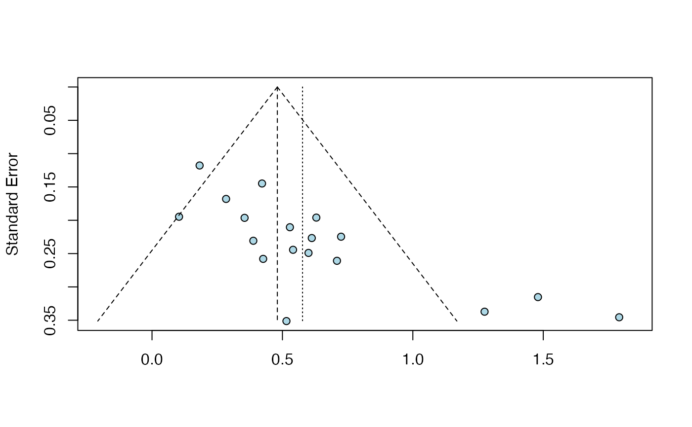

eggers.test.RdThis function performs Egger's test of the intercept for funnel plot asymmetry using an object
of class meta.
eggers.test(x)
| x | An object of class |
|---|
Returns a list containing the following elements:
intercept: The intercept (bias).
llci: The lower bound of the 95% intercept confidence interval.
ulci: The upper bound of the 95% intercept confidence interval.
t: The t-statistic for the intercept test.
p: The \(p\)-value for Egger's test.
meta.obj: The meta-analysis object of class meta originally provided
to the function.
Performs Egger's test (Egger et al., 1997) for funnel plot asymmetry.
The metabias function is called internally. Egger's test may lack
the statistical power to detect bias when the number of studies is small. Sterne et al.
(2011) recommend to perform funnel plot asymmetry tests only when \(k \geq 10\). A warning
is therefore printed when the number of studies in the meta object is \(k < 10\).
Harrer, M., Cuijpers, P., Furukawa, T.A, & Ebert, D. D. (2019). Doing Meta-Analysis in R: A Hands-on Guide. DOI: 10.5281/zenodo.2551803. Chapter 9.1
Egger M, Smith GD, Schneider M & Minder C (1997), Bias in meta-analysis detected by a simple, graphical test. BMJ, 315, 629–634.
Sterne, JAC et al. (2011), Recommendations for Examining and Interpreting Funnel Plot Asymmetry in Meta-Analyses of Randomised Controlled Trials. BMJ 343, 1, doi: 10.1136/bmj.d4002 .
# Create meta-analysis results using the 'metagen' function suppressPackageStartupMessages(library(meta)) data(ThirdWave) m = metagen(TE, seTE, studlab = paste(Author), data = ThirdWave, comb.random = FALSE, hakn=TRUE) # Plug result into 'eggers.test' function res.et <- eggers.test(m) # Inspect the results summary(res.et)#> Eggers' test of the intercept #> ============================= #> #> intercept 95% CI t p #> 4.111 2.39 - 5.83 4.677 <0.001 #> #> Eggers' test indicates the presence of funnel plot asymmetry.# Generate a funnel plot. This calls the 'funnel' function # in 'meta' internally; additional parameters of this function can also # be provided (see '?meta::funnel'). plot(res.et, bg = "lightblue")